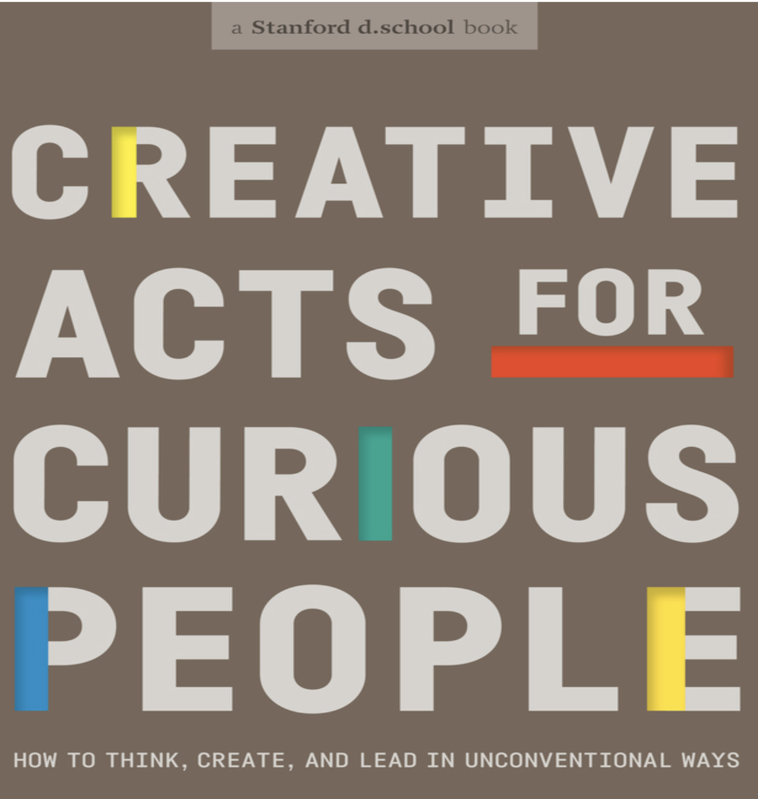

How Tonight Works
- Each team: ~8 minutes. Present what happened, not what you planned.
- After each team: questions from the room. Push for what surprised you and what's still unresolved.
- After all teams: we'll look at patterns, revisit your Duct Tape collections, and close the course.
Tell Us What Happened
What was your hypothesis?
The "We believe... because..." statement you left Session 5 with.
What did you actually test?
Describe the experiment you ran, not the one you planned.
What happened?
Results, reactions, data. Be specific.
What surprised you?
Where did reality break from your assumptions?
What would you do next? If you had another five days, what would you test, change, or investigate?
The 8 Design Abilities
Navigate Ambiguity
Staying in the question. Resisting the urge to resolve too quickly.
Learn From Others
Observing without judgment. Seeking perspectives unlike your own.
Synthesize Information
Finding patterns in noise. Moving from scattered data to actionable insight.
Experiment Rapidly
Generating many ideas without commitment. Building to think, not to ship.
Move Between Concrete and Abstract
Zooming in on details, out to purpose. Connecting the specific to the systemic.
Build and Craft Intentionally
Showing work at the right resolution for the feedback you need.
Communicate Deliberately
Telling the story of your thinking so others can follow the thread.
Design Your Design Work
Choosing the right tools, and making your own when none exist.
Design Your Design Work
Someone had to design every activity you did in this course. Each one maps to a specific ability. But these are one set of tools among many. You can also make your own.
Experienced machinists don't just use tools off the shelf. They fabricate custom jigs, fixtures, and cutting tools shaped by the specific job in front of them.
This ability is so large it could fill an entire course on its own. But now you know what design feels like from the inside. That means you can start designing your own process for problems no one has solved before.
This is the hardest ability. It takes years. Now you know what you are building toward.

Experienced machinists make their own tools. Photo: Wikimedia Commons, CC BY-SA 4.0
Everything You Have Built
| Tool | Skill Developed |
|---|---|
| Navigate Ambiguity | |
| Video Ambiguity Exercise | Productive discomfort with uncertainty |
| TETHER | Sustained attention without interpretation |
| Find the Duct Tape | Recognizing workarounds in broken systems |
| Learn From Others | |
| AEIOU Framework | Structured observation |
| "Why?" Interviews | Listening for what is not said |
| Stakeholder Mapping | Identifying who is affected and why |
| Distributed Research | Gathering data across diverse contexts |
| Synthesize Information | |
| Guided Synthesis | Observations to patterns to insights |
| Causal Loop Mapping | Systems, feedback loops, who benefits |
| Frame Breaking | Questioning whether the assumed problem is real |
| Tool | Skill Developed |
|---|---|
| Experiment Rapidly | |
| Solutions Tic-Tac-Toe | Diversity across risk, scope, timeline |
| Testable Hypotheses | "We believe... because..." |
| Assumption Audit | What must be true for this to work |
| Kill Criteria | What evidence would disprove your concept |
| Stress Testing | Breaking your own logic first |
| Move Between Concrete and Abstract | |
| Scope Shifting | Individual stories to systemic patterns |
| Stakeholder Concerns | Specific experiences to broader dynamics |
| Build and Craft Intentionally | |
| Prototyping | Right resolution for the learning you need |
| Gallery Walk | Showing work for specific, written feedback |
| Experiment Design | Smallest credible test of riskiest assumption |
| Communicate Deliberately | |
| Problem Definition | Clear, bounded, evidence-based statement |
| Experiment Results | What happened vs. what you planned |
Keep Going

Curious People


Architecture School